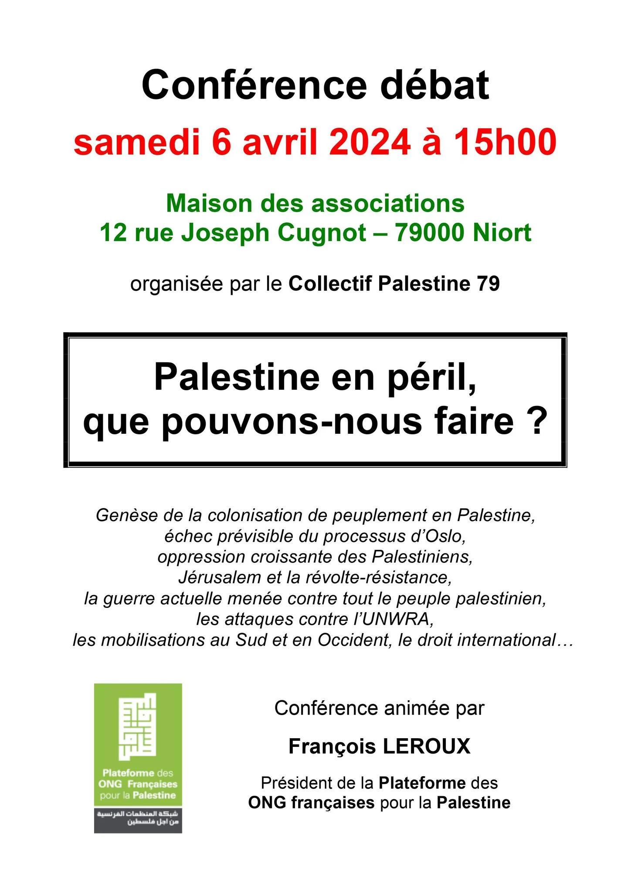

Appel relayé
À Niort, deux rendez-vous pour la Palestine le 6 avril
Date indiquée par Facebook · 5 avril 2024
Repères éditoriaux
Nous avons relayé les deux rendez-vous du Collectif Palestine 79. Le rassemblement était annoncé à 10 h 30 place des Halles, puis la conférence-débat à 15 h à la maison des associations.
Texte conservé avec la publication
Manifestation / Halte au massacre à Gaza !
Deux rendez-vous ce samedi 6 avril :
La France doit demander un cessez-le-feu immédiat !
1 - Rassemblement SAMEDI 6 AVRIL à 10h30 Place des Halles (en bas du parvis) à NIORT
à l'appel du Collectif Palestine 79 pour exprimer notre solidarité avec le peuple palestinien et demander un cessez-le-feu total et définitif à Gaza.
2 - Le samedi 6 avril 2024 à 15h00
Maison des associations
12 rue Joseph Cugnot – 79000 Niort
Le Collectif Palestine 79 vous invite à une conférence-débat :
Palestine en péril, que pouvons-nous faire ?

Sources
Archive rouge · export Facebook · AR-0002-FB-01429
À lire aussi · Ofer Cassif. Un entretien relayé après la procédure à la Knesset · Le lien d’origine